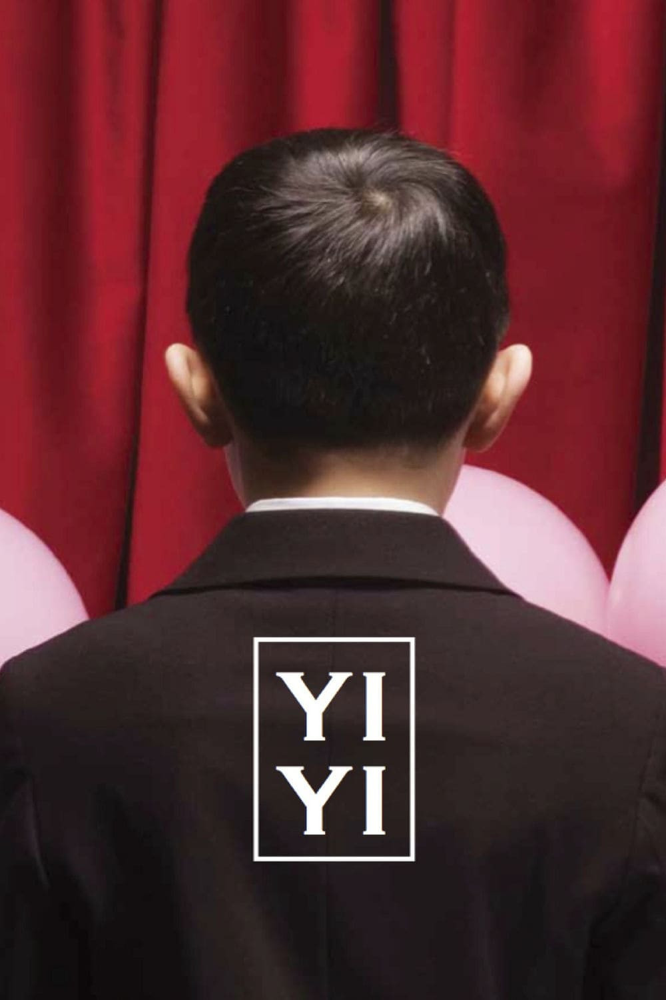
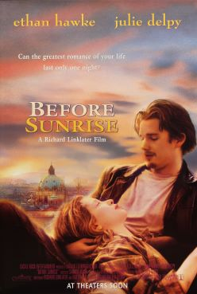

Books
Films


Online Writing
robinsloan.com/notes/home-cooked-app
↗
An app can be a home-cooked meal
Robin Sloan
henrikkarlsson.xyz/p/search-query
↗
A blog post is a very long and complex search query to find fascinating people and make them route interesting stuff to your inbox
Henrik Karlsson
personalcanon.com/p/research-as-leisure-activity
↗
research as leisure activity
Celine Nguyen
slatestarcodex.com/2014/09/10/society-is-fixed-biology-is-mutable/
↗
Society is Fixed, Biology is Mutable
Scott Alexander
×
·
×
↗
Link